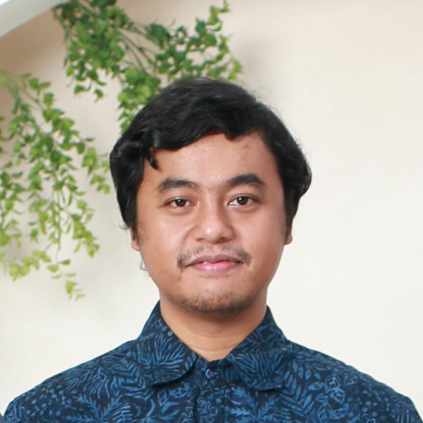
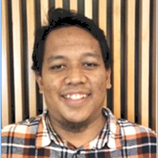

About BCS
Our Vision
Making BCS an exemplary company in the field of biodiversity that always innovates in seeking a balance between environmental, human and sustainable industrial activities.
Our Mission
-
To become a professional and leading consulting company.
-
Always innovating and using the up-to-date approach and technology to achieve the best results.
-
Act with integrity in the best efforts to achieve a balance between environmental sustainability and industrial activities that are humane and sustainable.
Our Strength
Technical Expertise
Our team boasts deep understanding of biodiversity across wide taxonomic groups. Recognized authorities in vegetation, mammals, birds, herpetofauna, insects, aquatic life, and marine ecosystems.
Innovation
Committed to staying at the forefront of technological advancements. We incorporate UAV/drone surveys, camera traps, acoustic recorders, and GIS-based data management.
Broad Usage
Comprehensive biodiversity services across all sectors and project phases, from initial planning to implementation, closure, and restoration.
Tailored Approach
We recognize that not all biodiversity issues are created equal, emphasizing a tailored approach to meet varying local, national, and international requirements.
Our Goals
Our Goal Define Path for Our Success.
Leading Company
Be A Leading Biodiversity Consulting Company on Biodiversity and Ecosystem Services in Indonesia.
Professional Services
To Excel in Our Professional Services on Biodiversity Consultancy.
Client Goals
Achieving More Client Goals on Biodiversity Protection and Conservation.
Key Leadership

Erry Kurniawan, M.Si
CEO & Ecologist SpecialistOver twelve years of experience as an independent biodiversity specialist and led biodiversity studies for numerous global and national companies.

Iqrarul Fata, S.Hut
COO & GIS ConsultantOver ten years of experience as a biodiversity, GIS and environmental consultant within renowned global consultancy firms.
E M Aaf Afnan, S. Hut
Principle ConsultantOver ten years of experience as a terrestrial biodiversity consultant specialist in wildlife management and conservation.
Associate Team and Experts
Ecologist, Compliance, Due Diligence, IA
- Erry Kurniawan, M.Si
- Iqrarul Fata, S.Hut
- EM Aaf Afnan, S. Hut
- Ahmad Murshid M.Si
- M Choiruddin Azis, SP
Botanist
- Ryna Ashari, M.Si
- Gilang Nur Satria, SP
- Renata Monica, ST
Mammalogist
- Febry R Hendiyanto, S.Hut
- Miftahul Rizky, SP
- Restu Syafaatul Mufti
- EM Aaf Afnan, S. Hut
Bat Specialist
- drh. Auzan Z Sukaton
- Siwi Arpathi Mandiri
- Miftahul Rizky, SP
- Dewa Nugraha, S.Pt
- Ahmad Murshid M.Si
Primatologist
- Dr. Fitriah Basalamah
- Hery Sudarno, M.Si
- Rahayu Oktaviani, M.Sc
- Gusti Wicaksono, S.Si
Ornithologist
- Nanang K Hadi, M.Si
- Ilham Kartiko S.Hut
- Wahyuni Hardiyanti, S.Hut
- Shofar Atthoyibi, S.Si
- Ahmad Murshid M.Si
Herpetologist
- Ahmad Nanang BA, S.Hut
- Purnama Graha
- Dewa Nugraha, S.Pt
- Bilal Maulana
Entomologist
- Raja R Harahap
- Akbar Alif Pribadi, SP
- Farhana Auliadin, S.Si
- Caesar Adhitya
Freshwater & Marine
- Ahmad Muhtadi, M.Si
- Rikho Jerikho, S.Pi
- Ramadani Fitra, M.Si
- Dyta Rabbani Aidil, S.Si.
- Vivi Safitri, M.Si.
- Fis Purwangka
GIS Specialist
- Salmana Wahwakhi, M.Si
- Kamaludin Asyaebani, S.Hut
- Renata Monica, ST
Planning & Management
- M. Choiruddin Azis, SP
- Miftahul Rizky, SP
- Andini Kusumawardhani, M.Si (Ecosystem Services)
- Renata Monica, ST (Ecosystem Services)
Social Specialist
- Ervina Anggraini, S.Sos
- Fadya Syifa Hani, ST
- Andini Kusumawardhani, M.Si